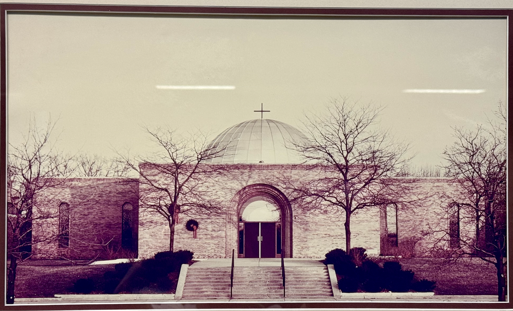
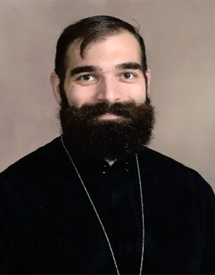
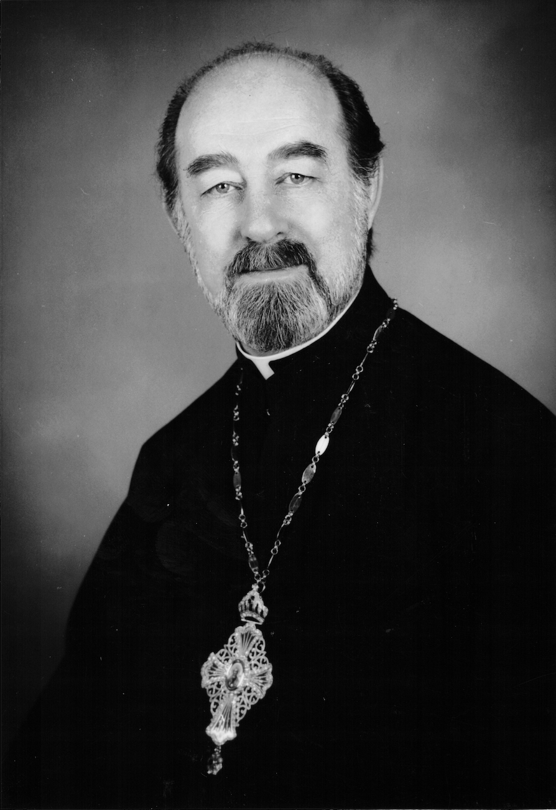
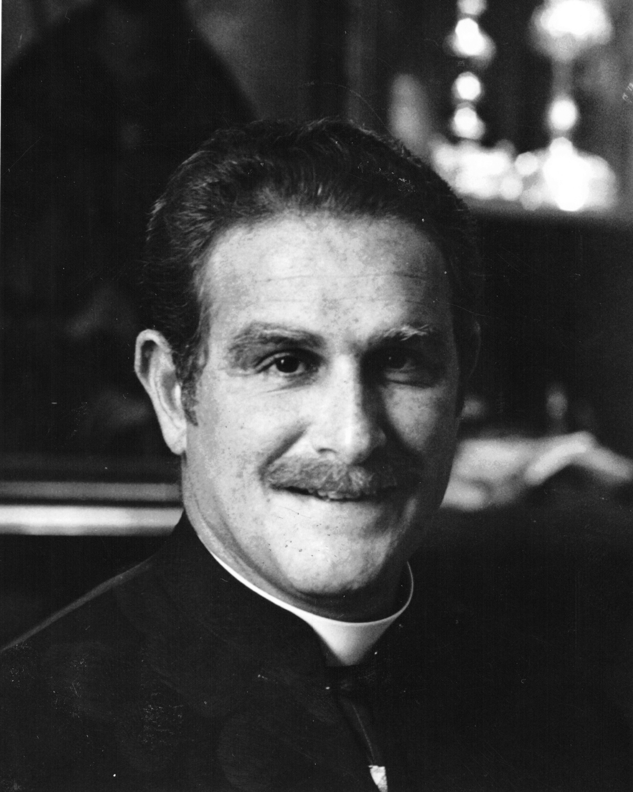
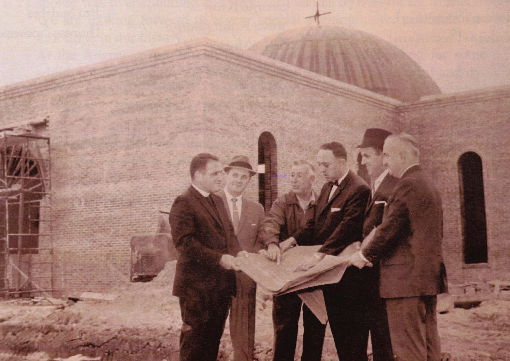
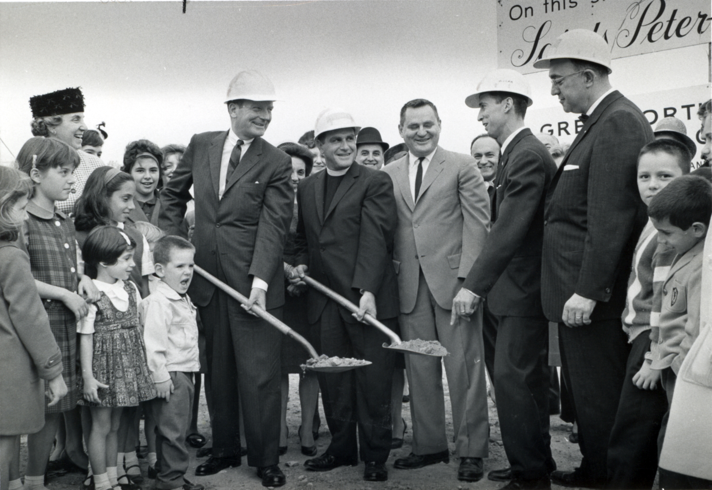
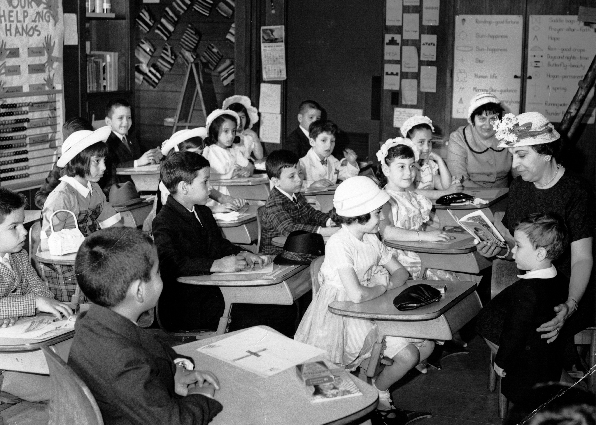
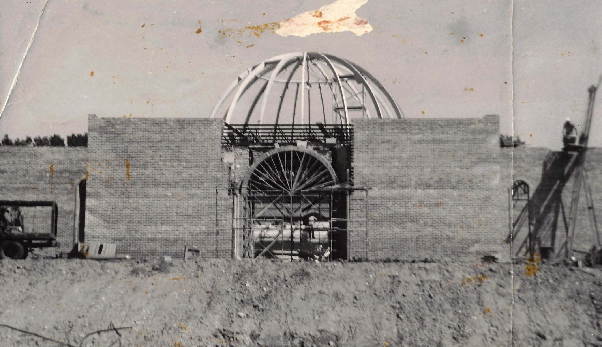
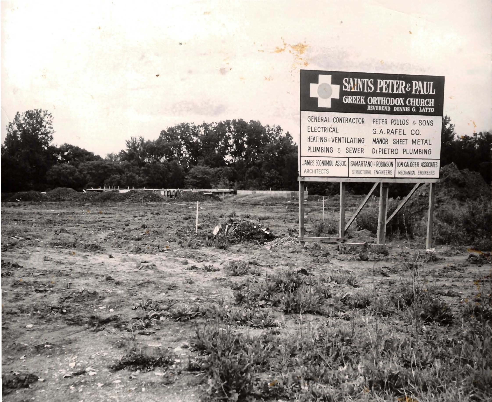
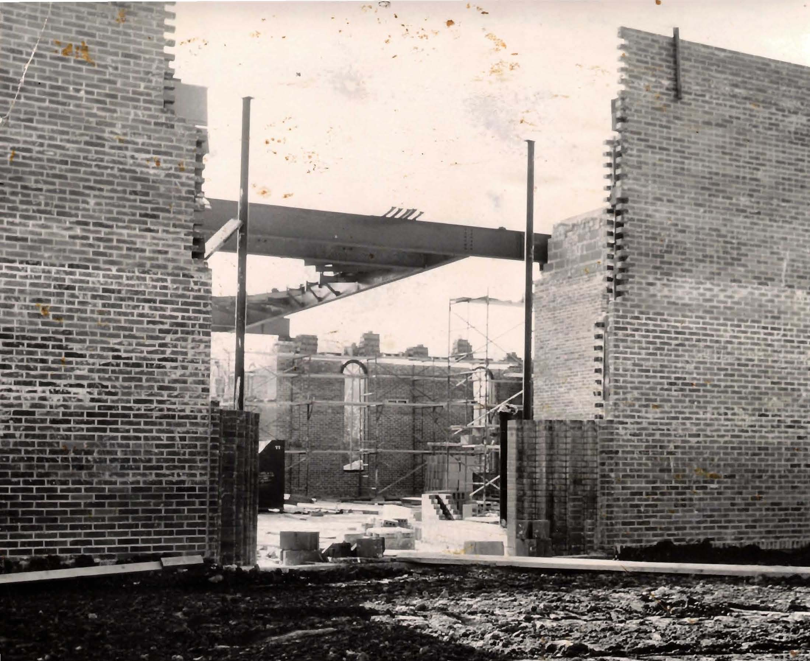

---
---
About | Saints Peter & Paul
{% include nav.html %}
A Greek Orthodox Parish in Glenview Since 1960
Saints Peter & Paul is a Greek Orthodox community open to all who seek Christ. Whether you grew up in the church, are exploring Orthodoxy for the first time, or are simply looking for a spiritual home, you belong here.
Purpose
To deeply connect with God and each other.
"To proclaim the Gospel through Orthodox Christian worship, fellowship, service, and witness."
Vision
To become the holy people of God, welcoming everyone on the path of transformation to experience the love, mercy, and forgiveness of Christ by the power of the Holy Spirit.
What we believe
Rooted in Ancient Faith
Orthodox Christianity has preserved the faith of the apostles for over two thousand years. At Saints Peter & Paul, we experience that rich tradition together through the Divine Liturgy, the sacraments, and our shared life as a parish.
It all began in the winter of 1958, when a few Greek Orthodox families in Chicago’s northern suburbs came together with a vision for a local parish. By 1959, the growing community was meeting for Sunday school at Crow Island School in Winnetka. The parish officially chartered in March 1960, and on November 15, 1964, our founding members celebrated the very first Divine Liturgy in our Glenview sanctuary.
The community expanded quickly from there. The Community Center opened in 1974, followed by the sanctuary’s consecration by Archbishop Iakovos in 1978. In the early 2000s, the dome was restored with breathtaking traditional iconography featuring Christ Pantokrator, the Heavenly Liturgy, and seventeen saints. Around the same time, we opened Agape Preschool, which now welcomes about 35 children across four classes each week.
Right from the start, offering the Divine Liturgy in English has been central to meeting families right where they are. While we are proud of our Greek heritage, Saints Peter & Paul is a home for everyone. We warmly welcome Orthodox Christians of all cultural backgrounds, interfaith families, and anyone exploring the faith for the first time.

In 1991, the parish expanded its footprint by acquiring two acres for our north parking lot. Over the decades, active lay leadership helped launch vital support ministries, while an expanded investment in youth programming and staff during the 1980s continues to anchor our community today.
Priests Who Have Served Our Community
Saints Peter & Paul has been blessed to serve as a launching pad for many associate priests and youth directors who went on to lead parishes of their own, including Fr. John Demos, Dcn. John Suhayda, Fr. Mark Elliott, Fr. Vladimir Christy, Fr. George Pyle, Fr. Peter Pappas, Fr. George Gartelos, Fr. Andrew Georganas, Fr. Michael Prevas, Fr. Alexander Lukashonok, Fr. Michael Stearns, Fr. Demetri Tobias, Fr. Kosmas Kallis, Fr. Paul Boris Dinkov, and Fr. Peter Sarolas. Additionally, Fr. John Kalantzis and Fr. Andrew Kearns were attached to our parish while serving as military chaplains at Great Lakes Naval Station.

2014 – 2019
Fr. Panagiotis Boznos
2012 – 2014
Fr. James Dokos
2001 – 2012
Fr. Angelo Artemas

1974 – 2000
Fr. George Scoulas

1962 – 1973
Fr. Dennis Latto
1960 – 1962
Fr. Kyrillos Petrovas
A look back






The Iconography of Our Sanctuary
Our neo-Byzantine sanctuary was brought to life across generations of traditional craftsmanship. John Terzis painted the main iconostasis in 1964, followed by Sirio Tonelli’s mosaic work of the Virgin Mary Platytera and Sts. Peter and Paul in 1966.
During our major dome restoration in 2000, George Filippakis painted the striking icon of Christ Pantokrator surrounded by the heavenly liturgy. Over the years, artists like Peter Mihalopoulos, Constantine Youssis, and Gianfranco Tassara have continued this sacred tradition, contributing portable icons of saints and feast days that enrich our worship today.